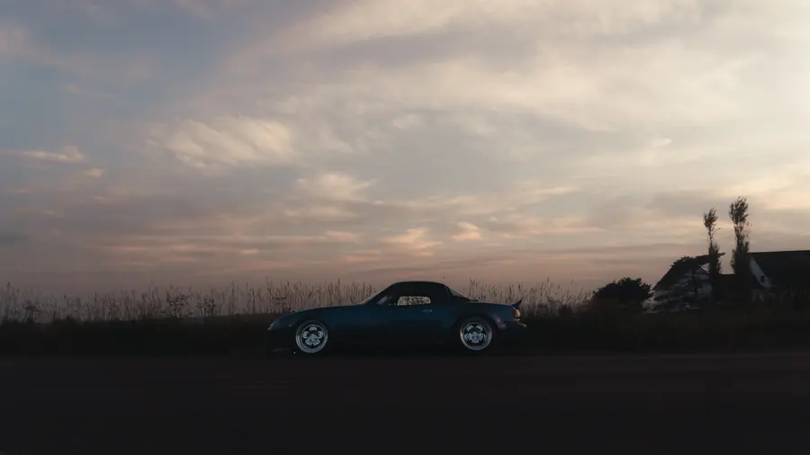

Car feature
Mazda MX-5 Miata (NA)
Simply Driven
An NA Miata around UNB Fredericton, from the rooftop lot in daylight to the gas pump after dark.

- Category
- Car features
- Posted
- August 2025
- Location
- UNB Fredericton
- Owner
- @savannasharp_7
- Photographs
- 45
- Original post
- View on Instagram

01
Daylight
The rooftop lot, the flagpoles and the old stone buildings.


02
Golden hour
Low sun through the trees.


03
Dusk
The field and the last of the sky.



04
After dark
Parkade lights and the gas pump.


More car features.
Car features


Your car. The next feature.
DM @ln._photos with your car, a date and where you’d like to shoot.